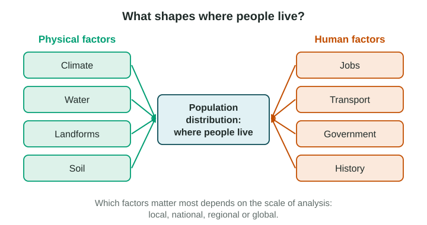
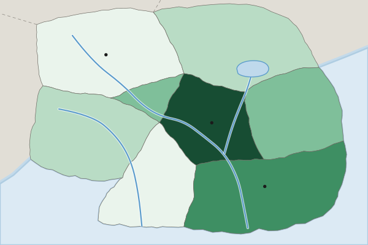

Population Distribution
Population distribution is the pattern of where people live.
Part 1 · Hook
Why this matters
Part 2 · Before you start
What this builds on
Part 3 · Prerequisite check
Quick check before you start
1. A map gives one value for each state of the United States. What is the scale of analysis?
- Local (subnational)
- Global
- Regional
- National
Show the answer
The data are for parts of one country, so the scale of analysis is subnational, even though the map shows the whole country.
- Correct: Local (subnational):
- Global:
- Regional:
- National:
2. People in a dry place pump water from far away and build a large city. Which idea fits?
- Possibilism
- Environmental determinism
- Distance decay
- Time-space compression
Show the answer
Possibilism says nature sets limits but people make choices and adapt.
- Correct: Possibilism:
- Environmental determinism:
- Distance decay:
- Time-space compression:
Part 4 · See it
See it first

Part 5 · Step by step
How it works, step by step
- A place has water, a mild climate, flat land and good soilfarmers can grow enough food there
- Enough food is grownmany people can live close together, and villages and towns grow
- Towns grow on rivers and coaststrade and jobs gather there, which draws even more people
- People move to where the jobs and services arethe world’s people end up clustered in a few regions, with large empty areas between
Part 6 · Key ideas
Key ideas
- Where people live is called population distribution. People are not spread evenly: most live in a few large clusters, in East Asia, South Asia and Europe.
- The ecumene is the part of Earth where people live permanently. Very dry, very cold and very high places lie mostly outside it.
- Physical factors (climate, water, landforms, soil) and human factors (jobs, transport, government decisions, history) work together.
- The pattern depends on the scale of analysis: Egypt looks crowded on a world map, but at the local scale almost everyone lives within a few kilometers of the Nile.
Part 7 · Misconception
A common mistake
The wrong idea: Physical factors alone decide where people live, so people never live in deserts or cold places.
What actually happens: Physical factors set limits, but human factors such as jobs, government plans and technology matter too. Phoenix grew in a desert, and Brasília was built inland by a government decision.
Part 8 · Check yourself
Check yourself
Exam-style questions. Anything you miss goes into your review queue.
Map
People per square kilometer in the provinces of Country A

People per square kilometer (invented data)
- Under 10
- 10 to 49
- 50 to 149
- 150 to 499
- 500 or more
1. At what scale of analysis are the data on this map?
- Local (subnational): each province of Country A has its own value
- National: the map shows the whole of Country A from border to border
- Global: the map compares countries of the world
- Regional: the map compares world regions
Show the answer
The scale of analysis is the scale of the data shown, not the size of the area on the map. One value per province is local (subnational) data.
- Correct: Local (subnational): each province of Country A has its own value: Right: the data are given for parts of one country, which is a subnational scale.
- National: the map shows the whole of Country A from border to border: the map covers one country, but each value is for a province. The scale of analysis is the scale of the data.
- Global: the map compares countries of the world: there is only one country on this map.
- Regional: the map compares world regions: a world region would hold several countries; these are provinces of one country.
2. Which statement best describes the pattern on the map?
- People are spread fairly evenly across the eight provinces of Country A, with small differences
- Highest in the Capital Region and South Coast, lowest in the Northern Hills and Southern Forest
- The Northern Hills have the most people per square kilometer
- People are clustered in the north and west of Country A
Show the answer
A strong description of a pattern names where values are high and where they are low: the Capital Region (500 or more) and the South Coast (150 to 499) are highest; the Northern Hills and the Southern Forest (under 10) are lowest.
- People are spread fairly evenly across the eight provinces of Country A, with small differences: the provinces fall into five different classes, from under 10 to 500 or more.
- Correct: Highest in the Capital Region and South Coast, lowest in the Northern Hills and Southern Forest: Right: this names where the high and low values are, using the legend.
- The Northern Hills have the most people per square kilometer: the Northern Hills are in the lowest class, under 10.
- People are clustered in the north and west of Country A: the north and west are in the two lowest classes.
3. Which term names the parts of Earth’s surface where people live permanently?
- Ecumene
- Population distribution
- Situation
- Formal region
Show the answer
The ecumene is the part of Earth where people live permanently. Antarctica and the center of the Sahara lie outside it.
- Correct: Ecumene: Right: the ecumene is the lived-in part of Earth.
- Population distribution: population distribution is the pattern of where people live, not the lived-in area itself.
- Situation: situation is a place’s location relative to other places.
- Formal region: a formal region shares a trait; it is not the lived-in part of Earth.
4. Most of Egypt’s people live in a narrow strip along the Nile River and in its delta. Which statement explains this pattern?
- The river valley is the coldest part of Egypt
- The river gives water for crops and drinking in a very dry country
- The government moved people away from the coast and into the valley
- The desert is too high and steep to build on
Show the answer
Egypt is a desert country. The Nile gives water, so people have lived in its valley and delta for thousands of years. That is population distribution shaped by a physical factor.
- The river valley is the coldest part of Egypt: temperature is not the reason; the rest of Egypt is a hot desert with almost no rain.
- Correct: The river gives water for crops and drinking in a very dry country: Right: water is the physical factor that draws people to the Nile.
- The government moved people away from the coast and into the valley: Egypt’s pattern is old; it follows the water of the Nile.
- The desert is too high and steep to build on: most of Egypt’s desert is flat or rolling; it is the lack of water that matters.
5. A student writes, "Canada’s people are clustered." Which change makes this a strong description of the pattern?
- Canada’s people are very clustered
- Canada has a large area and a small population
- Canada’s people are clustered because of its history, climate and economy
- Most Canadians live in a band near the border with the United States
Show the answer
Readers give no credit for "clustered" alone. A pattern needs a place: in Canada, most people live in a band near the southern border, and few live in the far north.
- Canada’s people are very clustered: adding "very" still does not say where the people are.
- Canada has a large area and a small population: this is true but says nothing about where people live inside Canada.
- Canada’s people are clustered because of its history, climate and economy: a reason does not replace the missing location of the cluster.
- Correct: Most Canadians live in a band near the border with the United States: Right: this says where the cluster is, which is what a description needs.
6. Which of these are human factors that shape where people live? Select all that apply.
- Jobs in factories and offices
- Roads and railways
- Rainfall
- Mountains
- Soil good for crops
Show the answer
Human factors are made by people: jobs, transport, government decisions and history. Physical factors come from nature: climate, water, landforms and soil.
- Correct: Jobs in factories and offices: Right: jobs are created by people and draw them to a place.
- Correct: Roads and railways: Right: transport links are built by people and draw settlement along them.
- Rainfall: Rainfall is a physical factor.
- Mountains: Mountains are a physical factor (a landform).
- Soil good for crops: Soil is a physical factor.
Part 9 · Summary
Summary
Part 10 · Up next
What comes next
Part 11 · Connections